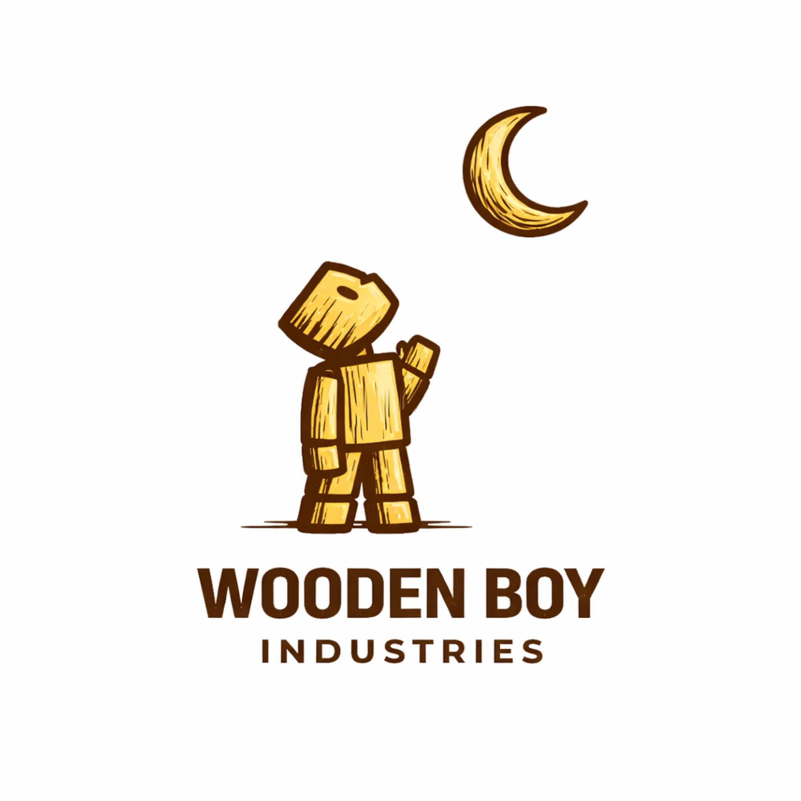
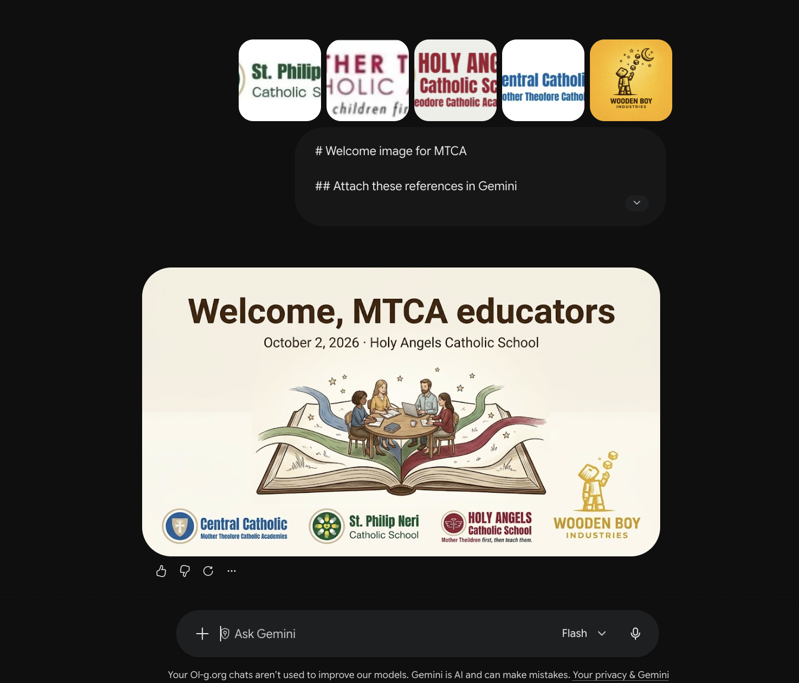
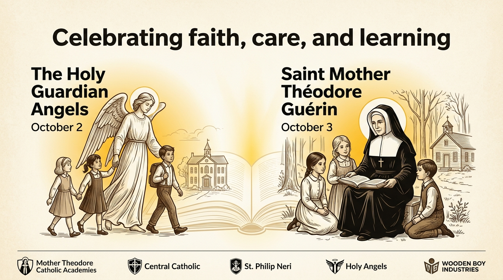
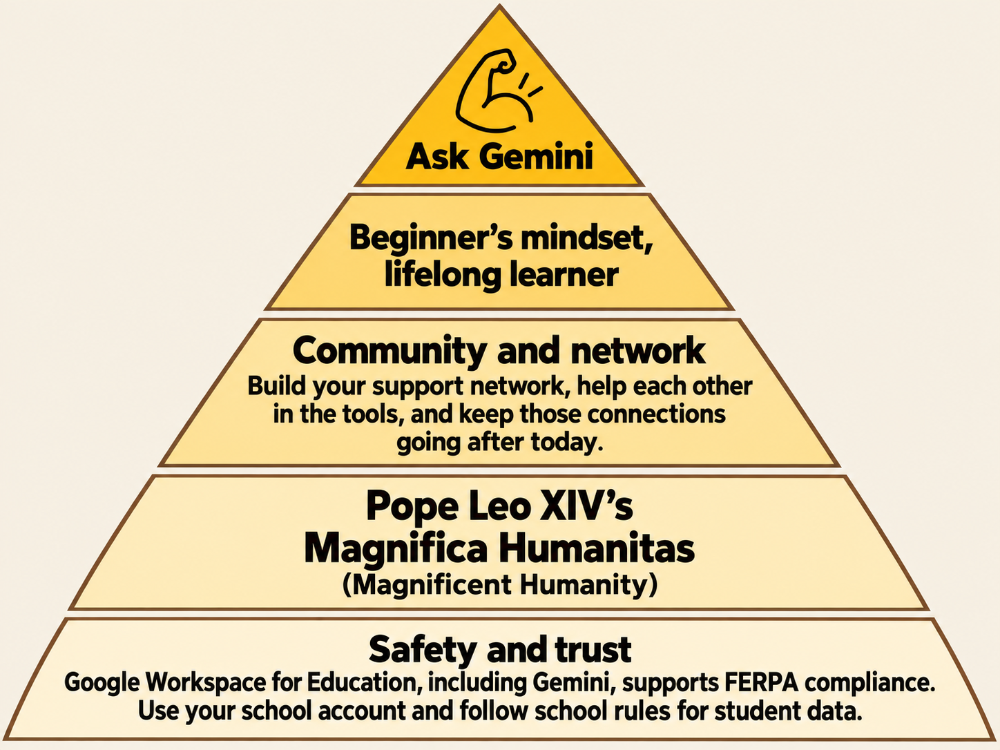
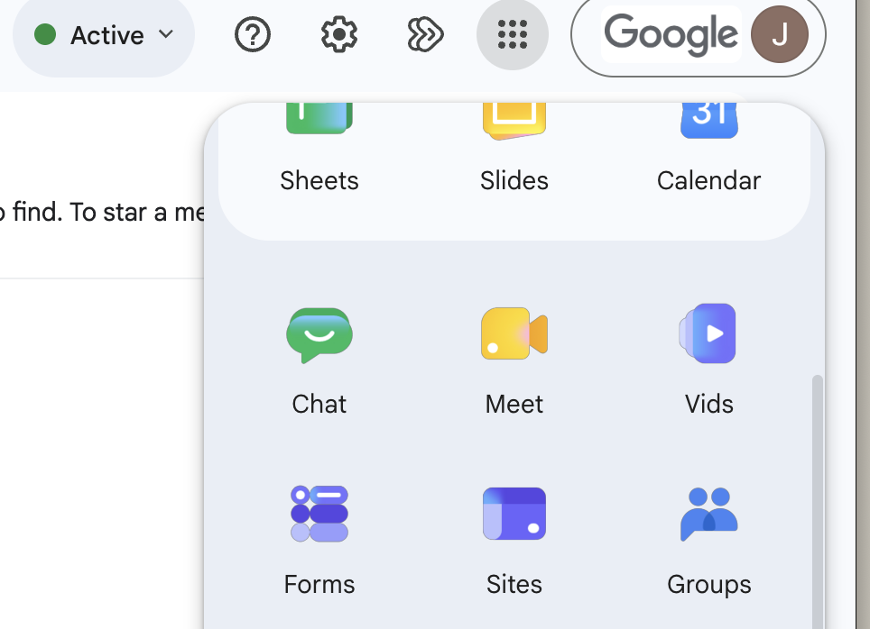
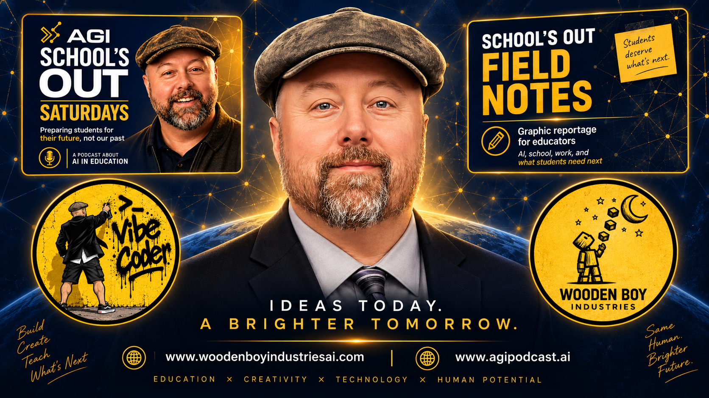

Created from the sources
A learning overview
A connected lesson built from the material I supplied.

WOODEN BOY INDUSTRIES

Choose a real task or frustration from your school day.
Try Google and AI tools with your colleagues.
Check what works and decide how you’ll use it.
A connected lesson built from the material I supplied.
The same day, organized so we can see how it fits together.

9:30–9:45
Build together, then make it yours.
As a table, collectively choose one:
Stuck on a step? Ask Gemini.
9:45–10:00
Turn your idea into a useful tracker.
→ Rows run horizontally, across.
Rows have numbers: 1, 2, 3.
↓ Columns run vertically, up and down.
Columns have letters: A, B, C.
A cell is one box. B2 is column B, row 2.
| A | B ↓ | C | |
|---|---|---|---|
| 1 | Item | Quantity | Notes |
| 2 → | Pencils | B2 | Sample |
| 3 | Paper |
Gold runs across row 2. Green runs down column B.
As a table, build on your Google Doc.
Find the example that matches your Google Doc. All three are shown below.
Example only. Use fictional names and practice data.
| A | B | C | |
|---|---|---|---|
| 1 | Student | Before: score out of 5 | After: score out of 5 |
| 2 | Johnny | 2 | 4 |
| 3 | Maya | 3 | 5 |
| 4 | Eli | 1 | 3 |
Each row is one fictional student. Columns B and C show scores for the same learning goal.
Example only. Use fictional names and practice data.
| A | B | C | |
|---|---|---|---|
| 1 | Student | Completed? | Score out of 10 |
| 2 | Johnny | Yes | 8 |
| 3 | Maya | No | |
| 4 | Eli | Yes | 6 |
Each row is one fictional student. Leave the score blank when the worksheet is incomplete.
Example only. Use fictional names and practice data.
| A | B | C | |
|---|---|---|---|
| 1 | Job | Volunteers needed | Volunteers signed up |
| 2 | Welcome table | 3 | 2 |
| 3 | Refreshments | 4 | 3 |
| 4 | Cleanup | 3 | 1 |
Each row is one job. Columns B and C show how many people are needed and how many have signed up.
Average after-lesson score
For this example, type Average after-lesson score in A6. Select B6, enter this formula, and press Enter:
=AVERAGE(C2:C4)B6 result: 4 out of 5
Check it: Change Johnny’s after score in C2 from 4 to 1. The average changes from 4 to 3.
Number of completed worksheets
For this example, type Number of completed worksheets in A6. Select B6, enter this formula, and press Enter:
=COUNTIF(B2:B4,"Yes")B6 result: 2 completed
Check it: Change Maya’s status in B3 from No to Yes. The completion count changes from 2 to 3.
Volunteer spots still open
For this example, type Volunteer spots still open in A6. Select B6, enter this formula, and press Enter:
=SUM(B2:B4)-SUM(C2:C4)B6 result: 4 spots open
Check it: Change the cleanup sign-ups in C4 from 1 to 2. The number of open spots changes from 4 to 3.
Try it: Sort the whole table by its first column, keeping the heading row at the top. Check that each row’s information stays together. Ask Gemini for the steps.
Stuck on a step? Ask Gemini.
10:00–10:15
Build it. Exchange it. Answer it. See the results.
Work in pairs. Create a simple form with at least four different question types. Connect it to your earlier project if that helps.
In your school Gmail or another Google app, click the nine-dot Google apps button near your profile picture. Scroll through the menu and click Forms.

Check that your school account is active. Then choose a template under Start a new form or Template gallery.
Open Google Forms ↗A short check of what someone knows.
What someone learned and what they still need.
Questions about understanding a topic.
A short set of practice questions.
What is one thing you learned?
The dropdown changes the answer format. This is an illustration of the question editor.
A simple starting set: short answer, paragraph, multiple choice, and checkboxes.
Editor access is for building. Responder access is for answering.
Your form → Responses → Summary / Individual
The loop is complete when you can find the other pair’s submitted answers.
Stuck on a step? Ask Gemini.
Google guides: Find and create FormsQuestion typesEditor accessPublish and shareView responses
11:00–11:30 · Possibilities for educators
Turn one learning goal into a useful first-draft lesson?
Does it serve the learners we know and the purpose we teach for?
Which lesson would we try this with?
Create clearer explanations, vocabulary support, and extension activities?
Does the adaptation preserve meaning and respect every learner’s dignity?
What material would we adapt first?
Create an illustration that makes a difficult idea easier to explain?
Is the image truthful, respectful, and useful for learning?
What idea in our work needs a better visual?
Draft a rubric and examples of what meeting the goal looks like?
Are the expectations fair, clear, and still ours to judge?
Where would a clearer rubric help us?
Turn our sources into a study guide, mind map, and practice questions?
Do the resources stay faithful to the sources and encourage understanding?
What sources would we bring together?
Turn the same sources into an audio discussion or short video overview?
Does this make the ideas more accessible without losing their meaning?
Who would benefit from another way to learn?
Turn our notes into a slide draft with supporting visuals?
Does it communicate our message accurately and respect our audience?
What presentation could we prepare this way?
Describe an idea and build a small interactive activity to test?
Does the activity support a learning goal, and have we checked that it works?
What would we like to prototype as educators?
Turn fictional survey responses into themes, formulas, and charts?
Are we protecting privacy and checking whose perspective the summary misses?
What question could better information help us answer?
Use a Gem to draft clearer messages for ClassDojo, the channel families read?
Does the message preserve our meaning and strengthen trust with the family?
Would we try it, then review, send, and retain the message in ClassDojo?
Summarize an email thread and find the school information we need?
Have we checked the source, protected privacy, and kept the important context?
Where could this give us time back this week?
Help schedule a meeting, capture notes, and draft the follow-up?
Do people know what is captured, and have we verified decisions and access?
Would we try it for our next staff follow-up?
What do you wish we could do?
Will we?
Examples are for educators using AI in their work. Availability depends on school settings and license; MTCA’s exact edition has not been confirmed. Use fictional information for practice.
“Should we?” draws on human dignity, truth, relationships, and responsibility in Pope Leo XIV’s Magnifica Humanitas. These are discussion questions, not quotations or product endorsements.
ClassDojo is used for school–family messages and updates. A Gem can help draft; staff review and send. ClassDojo supports message-history downloads. No automatic Gemini–ClassDojo connection is assumed. Forms AI summaries support certain open-text responses, not quiz responses.
Gemini for Education ↗ · Classroom tools ↗ · NotebookLM ↗ · Canvas ↗ · Slides ↗ · Sheets ↗ · Forms summaries ↗ · Gems ↗ · ClassDojo message history ↗ · Gmail ↗ · Connected apps ↗ · Meet notes ↗ · Magnifica Humanitas ↗
12:15–2:30 · With Jason Padgett
Build your design-thinking partner.
Learn the methods. Shape how your partner collaborates. Build knowledge you can use across different challenges.
12:15–12:25
A few volunteers: show something you’ve made with AI outside today’s workshop.
Our rhythm for each method
Ask → Discuss → Research & refine → Create the guide → Add it to the Gem
Design thinkingAn adaptable, human-centered approach to understanding challenges and exploring possibilities through curiosity, empathy, experimentation, and learning. Its methods adapt to the people and situation.
Instructions: how your partner behaves and collaborates.
Knowledge: the method guides it can draw on.
Preview: try a conversation, refine, then save.
Scroll down in the Gem editor to find Knowledge → Add files.
Consolidate our discussion into a reusable method guide for my design-thinking partner. Include the method’s purpose, when it is useful, how to guide someone through it, useful questions, limitations, and how to adapt it to different situations. Preserve the choices we made. Label examples as examples, distinguish evidence from assumptions, and include the sources we actually checked. Do not invent citations. Format it in Markdown so I can review and save it.
Review the guide before uploading. Save the Markdown text as a file, or use a document format your account accepts.
A partner you can keep learning with, adapting, and improving.
Keep the conversation going
AI Solutions Architect | Co-Founder, Wooden Boy Industries | Host, AGI Podcast | AI Adoption, LLM Systems & Human-AI Workflows
AGI School’s Out Podcast
www.agipodcast.ai
